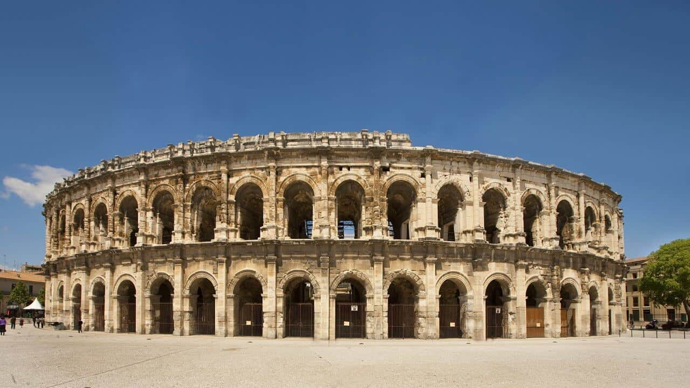

Historical Places of France
1. Mont-Saint-Michel
The church atop Mont-Saint-Michel was built as early as the 8th century, and if you ask the right people they’ll tell you this was by order of the Archangel Michael himself. Throughout the years that followed its construction, other buildings and streets went up on the steeps alongside it until Mont-Saint-Michel eventually became a little town, and much later named a UNESCO World Heritage Site.
Today it has been a major pilgrimage destination for centuries, not to mention a hit with the tourists. It lies in the bay where Brittany and Normandy merge, seemingly free-floating on days of high tide. For hundreds of years, the causeway between the mont and the mainland was only uncovered at low tide. These days there is a light bridge crossing which allows the ocean to ebb and flow around it, only covering the path on the occasional “supertide”.
2. Père Lachaise Cemetery
Père Lachaise Cemetery is both the largest park and the largest cemetery in Paris. It was founded in 1804 and has since expanded across 44 hectares of land. These grounds hold 70,000 marked burial plots, but nobody knows for sure how many people have been buried here over the years (educated guesses range from 300,000 to 1,000,000). One thing is for sure, however: a myriad of celebrities have found their eternal resting place at Père Lachaise…
As you wander through the seemingly endless maze of curious-looking plots, ranging from gothic graves to Haussmann chambers and ancient mausoleums, you’ll come across more than one recognizable name. The list includes Honoré de Balzac, Guillaume Apollinaire, Frédéric Chopin, Colette, Jean-François Champollion, Jean de La Fontaine, Molière, Yves Montand, Simone Signoret, Jim Morrison, Alfred de Musset, Edith Piaf, Camille Pissarro and Oscar Wilde, just to name a few…
3. Nîmes Arena

In the years of that great empire, Nîmes Arena was home to the traditional Roman games. Its enchanting elliptical shape gave unobstructed views of the performances to 20,000 spectators who accommodated on the 34 seated rows. The arena’s two levels and surmounting attic are covered by sixty stone arches, and a whole network of galleries with no less than 126 staircases that lead visitors to their seats.
When the Roman Empire was no more, the Visigoths transformed the Nîmes Arena into a fortress. Later, during the middle ages, a small village was erected within its walls, complete with wells, houses, churches and a castle. These structures remained until the 18th century when a subsequent deconstruction began. The Prefect of the Guard authorized the first bull races in 1813, allowing the arena to fulfil its original function once more. To this day, bullfighting can be viewed there during the Feria of Nîmes.
4. D-Day Landing Beaches
Odds are, you’ve heard the story of D-day many times already. How Operation Overlord went into action on 6 June 1994, with more than 6000 ships and boats heading straight for the beaches of northern Normandy, spilling tens of thousands of Allied soldiers onto their sands. These beaches, once the locations of history’s largest seaborne invasion, now attract tourists by the thousands who want to pay their respect and see traces of the 76-day Battle of Normandy which took over 210,00 lives and changed the world forever.
The 80km of beaches north of Bayeux, where it all went down, are known as Utah, Omaha, Gold, Juno and Sword. Each saw a unique aspect of the battle and bears its evidence in the form of memorials, bunkers and old batteries. A visit to the D-day beaches should also include these sites as well as the six museums which tell the intricate story of the event.
5. Lascaux Caves

The life-changing discovery of a French teenager and his young friends in the 1940’s, the Lascaux caves contain over six-hundred paintings of animals from the Upper Palaeolithic time. The paintings which cover the cave’s walls and ceilings are tentatively estimated to be about 17,000 years old, an ongoing art-project of several generations.
Lascaux opened to the public after World War II, but as visitor numbers rose to around 1500 a day, the large amounts of carbon dioxide exuded by the human breath began to damage the art. Thus, the original Lascaux cave closed in 1963 and now only accessible to an increasingly small number of scientist and field experts every year. Visitors are instead invited to explore the nearby replica of the caves, as it has been reconstructed down to every detail. Professional guides will accompany groups of visitors several times a day leading tours and answer questions about the cave’s curiosities.
6. Temple of Heaven, Beijing
Twenty metres below ground, underneath the heart of beautiful Paris, is a hidden labyrinth. This winding maze of narrow passages and dark galleries was built centuries ago, out of the old quarries whose stone was used to construct the city. They contain the remains of millions of Parisians, transferred from their original resting places when the city’s graveyards, a threat to public health, were being closed during the eighteenth and nineteenth centuries.
The bones in the ossuary are arranged into a rather macabre display of typical Romantic tastes and visitors are greeted by the verse “Arrête, c’est ici l’empire de la mort” (Halt, this is the realm of Death) as they enter the two-kilometre route through the catacombs. The tour takes around 45 minutes to complete and it’s quite the sight to see, but definitely not one for the squeamish.
7. Strasbourg Cathedral
The Strasbourg Cathedral is nothing less than a masterpiece of Gothic art, and not one to be appreciated in a rush. Victor Hugo referred to it as a ‘light and delicate marvel’ although that only begins to cover it. The cathedral is over a thousand years old and was constructed across centuries atop the site of an old Roman temple, whose crypt still remains.
The masons and artisans who decorated the edifice down to every last detail left a series of enigmatic secrets and codes behind, but the most impressive of all is the astronomical clock whose automated figures parade around each day at half past noon. The building’s outside, crafted from pink sandstone that changes its hues as the natural light shifts throughout the day, is covered in hundreds of sculptures which make use of light and shadows to appear to be jumping out at you.
8. Carnac Megalithic Standing Stones

Around the village of Carnac, a gathering of over 3000 megalithic standing stones remain since the pre-Celtic population of Brittany erected them an indeterminate number of millennia ago. The assemblage consists of both single stones (menhirs) and fascinating clusters (dolmens). The biggest such alignment is made up of 12 converging rows of stone, stretching over a kilometre with a stone circle at the end. Its largest stones are located to the west and the smallest to the east.
What may be the purpose of such stones, you ask? The truth is that nobody knows. Local legend claims that the wizard Merlin once turned a Roman legion marching through Carnac into stone and left them there. Historians and scientists have theorised that the stones acted as calendars, tracking the seasons and the moon. Their true use remains unknown, but the mystery certainly adds a little something to the visiting experience. .
9. Chateau de Villandry
In 1532, Jean Le Breton who was Finance Minister to Francis I came into possession of the old Villandry Estate. He subsequently knocked down the existing buildings and erected the last great chateaux of the Loire Valley built during the Renaissance, Chateau de Villandry. Throughout the centuries, the chateau went through many changes in style and ambience, until Doctor Joachim Carvallo and his wife Ann Coleman purchased it in 1906, and their family dedicated their entire fortune to restore its original glory.
To this day, the chateau is a testament to the French Renaissance lifestyle, although the interiors hold a few surprises such as a fountain in the dining room and the famous Hispano-Moorish ceiling above the Oriental Room. But even more celebrated is the chateau’s six formal gardens, each of which is strategically planted into unique motifs.
10. Les Invalides
Les Invalides, or Hôtel des Invalides as it was originally known, is a complex of building on the Left Bank of the Seine in Paris with a rich military history. To honour the sacrifices made by war veterans, Louis XIV had the hôtel built in the 1670s to serve as a home and hospital for aged and unwell soldiers with nowhere to go. This was also where the mob that stormed the Bastille looted their firearms. The grand compound takes up 196 metres of riverfront, and among its many buildings (including a church) it houses fifteen courtyards.
These days, part of Les Invalides still serves as a hospital and retirement home although it also houses a series of monuments and museums relating to French war history, as well as the headquarters of the military governor of Paris and the famous Dôme des Invalides, the church where Napoleon is entombed.